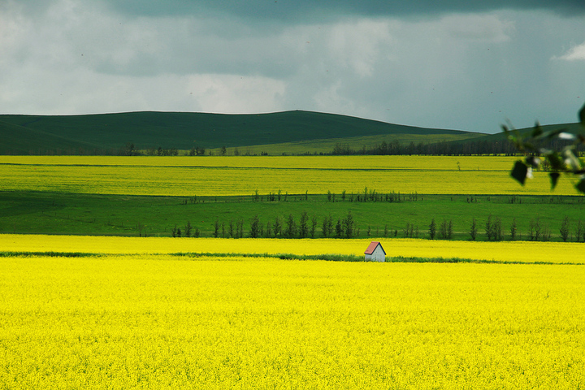

呼伦贝尔市，内蒙古自治区下辖地级市，以境内呼伦湖和贝尔湖得名。地处东经115°31′~126°04′、北纬47°05′~53°20′之间。东邻黑龙江省，西、北与蒙古国、俄罗斯相接壤，是中俄蒙三国的交界地带，与俄罗斯、蒙古国有1723公里的边境线。呼伦贝尔市总面积26.3万平方公里，相当于山东省与江苏省两省之和。
呼伦贝尔市，内蒙古自治区下辖地级市，以境内呼伦湖和贝尔湖得名。地处东经115°31′~126°04′、北纬47°05′~53°20′之间。东邻黑龙江省，西、北与蒙古国、俄罗斯相接壤，是中俄蒙三国的交界地带，与俄罗斯、蒙古国有1723公里的边境线。呼伦贝尔市总面积26.3万平方公里，相当于山东省与江苏省两省之和。
呼伦贝尔市，内蒙古自治区下辖地级市，以境内呼伦湖和贝尔湖得名。地处东经115°31′~126°04′、北纬47°05′~53°20′之间。东邻黑龙江省，西、北与蒙古国、俄罗斯相接壤，是中俄蒙三国的交界地带，与俄罗斯、蒙古国有1723公里的边境线。呼伦贝尔市总面积26.3万平方公里，相当于山东省与江苏省两省之和。
市境内的呼伦贝尔草原是世界四大草原之一，被称为世界上最好的草原。有8个国家级一、二类通商口岸，其中满洲里口岸是中国最大的陆路口岸。
呼伦贝尔[2]，内蒙古自治区下辖地级市，以境内呼伦湖和贝尔湖得名。地处东经115°31′～126°04′、北纬47°05′～53°20′之间。东邻黑龙江省，西、北与蒙古国、俄罗斯相接壤，是中俄蒙三国的交界地带，与俄罗斯、蒙古国有1733公里的边境线 。呼伦贝尔市总面积26.2万平方公里[15]，相当于山东省与江苏省两省之和。
2012年7月9日入选国家森林城市[18]。市境内的呼伦贝尔草原是世界四大草原之一，被称为世界上最好的草原。有8个国家级一、二类通商口岸，其中满洲里口岸是中国最大的陆路口岸
呼伦贝尔草原位于大兴安岭以西，是牧业四旗——新右旗、新左旗、陈旗、鄂温克旗和海区、满市及额尔古纳市南部、牙克石市西部草原的总称。呼伦贝尔草原由东向西呈规律性分布，地跨森林草原、草甸草原和干旱草原三个地带。除呼伦贝尔草原东部（约占草原总面积的10.5%）为森林草原过渡地带外，其余多为天然草场。多年生草本植物是组成呼伦贝尔草原植物群落的基本生态性特征，草原植物资源约1000余种，隶属100个科450属。
呼伦贝尔市野生植物资源相当丰富，共有野生植物1400多种，有经济价值的野生植物达500种以上，主要有野生药用植物、野生经济植物、野生油料植物、野生纤维植物、野生淀粉植物、野生食用植物、野生果品植物等。
植被分布由森林向草原过渡，植被的分布依年降水量决定。
呼伦贝尔市野生动物品种和数量繁多。据不完全统计，全市野生动物种类点中国种类总数的12.3%，占自治区的70%以上，居第一位。全市313种鸟类中，受国家保护的鸟类有60多种，如丹顶鹤、白头鹤、白鹤、灰鹤、大天鹅、小天鹅等。


 
{kind=link}